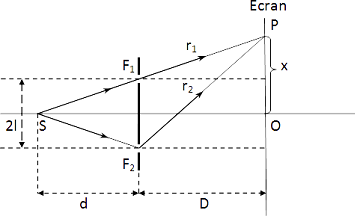

Introducere în curs
Interfența. Lama cu fețe plan-paralele.
Introducere în curs
Interfența este un fenomen optic fundamental care apare atunci când două sau mai multe unde se suprapun, rezultând o nouă undă care poate avea o amplitudine și o fază diferită față de undele individuale.
Lamă cu fețe paralele este un exemplu clasic de interfență, utilizat frecvent pentru a demonstra comportamentul undelor.
Acest fenomen este esențial în studiul undelor electromagnetice, sunetului și în aplicarea tehnologiilor moderne, precum telecomunicațiile și opticile.
Conceptul de Interfență
DefinițieInterfența se referă la suprapunerea a două sau mai multe unde, care poate produce un model de intensitate variabilă pe o suprafață. Aceasta poate fi de două tipuri:
- Interfență constructivă:
- Interfență distructivă:
- Interfența în undele electromagnetice:
- Interfența în undele sonore:
apare atunci când vârfurile undelor se suprapun, rezultând o undă cu o amplitudine mai mare.
apare atunci când vârful unei unde se suprapune cu creasta celeilalte unde, anihilându-se reciproc.
Tipuri de interfență
se manifestă în fenomene precum formarea unor modele de benzi de lumină pe ecranele experimentale.
afectează calitatea sunetului perceput și se poate observa în tehnici muzicale.
Exemple
Lama cu Fețe Paralele
DefinițieLama cu fețe paralele este un dispozitiv optic format din două fețe plane paralele, care poate provoca interfență prin reflexia luminii. Aceste lame sunt utilizate frecvent în experimentele de interferență datorită simplității lor.
Principiul de funcționareLama cu fețe paralele produce interfență datorită reflexiei luminii de pe cele două fețe. Atunci când un fascicul de lumină cade pe lamă, o parte este reflectată de prima față, iar o altă parte este transmisă și reflectată de a doua față. Cele două fascicule reflectate se suprapun, generând un model de interfență.
Condiții pentru interfențăPentru a obține un model de interfență distinct, trebuie să se îndeplinească anumite condiții:
- Lumina folosită trebuie să aibă o lungime de undă constantă.
- Cele două fascicule trebuie să fie coerente, adică să aibă aceeași frecvență și să fie în fază.
Analiza Fenomenului de Interfență
Ecuația de interfențăEcuația care descrie interfența în cazul unei lame cu fețe paralele este: d sin(θ) = m λ
unde:
d este distanța între fețele paralele,
θ este unghiul de difracție,
m este ordinul de interfență (m = 0, ±1, ±2, ...),
λ este lungimea de undă a luminii.
Criteriile de interfență
- Interferența constructivă apare atunci când 𝑚 este un număr întreg.
- Interferența distructivă apare atunci când 𝑚 este un număr semi-intreg (m = 0.5, ±1.5, ...).
Exemplu de experimentUn exemplu clasic este experimentul lui Young, care demonstrează interfența utilizând o lamă cu fețe paralele. Prin utilizarea unei surse de lumină monocromatică, se pot observa benzi alternante de lumină și întuneric pe un ecran.
Thomas Young a demonstrat că lumina se comportă ca o undă prin experimentul său, în care o sursă de lumină monocromatică era direcționată către un paravan cu două fante. Lumina care trecea prin fante a suferit difracție și a interferat, generând un model pe ecran format din dungi paralele și echidistante de lumină și întuneric, denumite franje de interferență. Această observație a confirmat teoria undelor, deoarece lumina a prezentat proprietăți caracteristice undelor, cum ar fi difracția și interferența.
Aplicații Practice și Experimente
Utilizări în tehnologie:Lamele cu fețe paralele sunt utilizate în:
- Optică:pentru crearea de filtre și prisme;
- Telecomunicații:în fibră optică pentru a îmbunătăți transmisia semnalului;
- Analiza chimică:în spectroscopie pentru a analiza spectrele luminii.
Experimente practice:
- Experimentul cu benzi de interferență:se poate monta un dispozitiv cu o lamă cu fețe paralele și o sursă de lumină, iar observarea benzii de interferență pe un ecran;
- Măsurarea lungimii de undă:folosind lama cu fețe paralele pentru a determina lungimea de undă a unei surse de lumină prin observarea distanței între benzi.
Concluzii:
Studiul interfenței cu lama cu fețe paralele oferă o înțelegere profundă a comportamentului undelor și aplicarea lor în diverse domenii tehnologice. Acest fenomen este esențial pentru dezvoltarea opticii moderne și a tehnologiilor de comunicație.